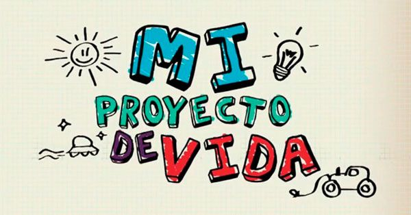

En este proyecto se marcará un propósito anhelado este es cruzar la preparatoria el cual queremos lograr por método o estrategias para que sea cada vez más fácil o más facil de manejarla, esto es importante para poderlo construir ya que la felicidad de los adolescentes depende de cómo lo han ido planeado y haciendolo. Como ya mencionamos antes la trayectoria creada durante la adolescencia muchas de las veces marcan el proyecto ya que la adolescencia suele ser la vece de nuestra vida en la que comenzásemos a tomar decisiones propias y hacernos responsables de nuestros propios actos. El problema de esto es que a veces suelen no gustarnos o interesarnos las materias o temas que se vean durante la clase y esto suele afectar en el proceso y eso provoca que menos adolecentes se propongan algo en la vida.
Para lograrlo tienes que mantener en claro el objetivo y crear o buscar estrategas basadas a tu personalidad y siempre tener en claro cuál es tu objetivo en este caso cursar la preparatoria con buenas notas y las menores faltas posibles ya que esto llegue a afectar de algún modo.
Teniendo en cuenta que en la preparatoria tenemos 3 años (En México) solo tenemos ese tiempo sin contar la universidad, pero si desde niños nos ponemos las metas claras son como 18 años máximo.
•#1 Etapa de autoconocimiento.
•#2 Determina tus prioridades y necesidades.
•#3 Crea tus propias metas.
•#4 Lleva a la acción tu proyecto de vida.
•#5 Revisa tu plan y haz modificaciones.